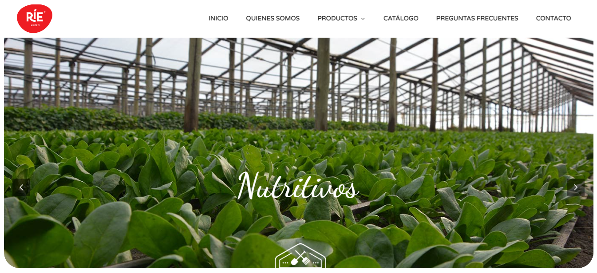
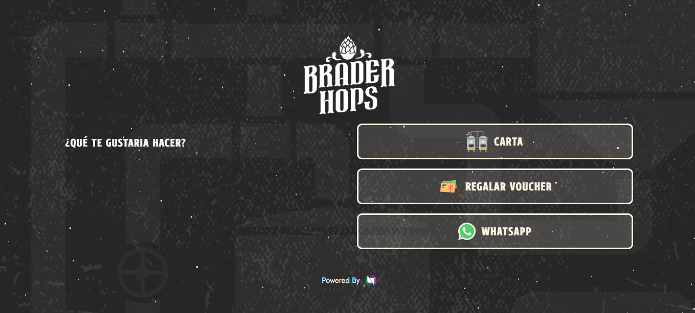
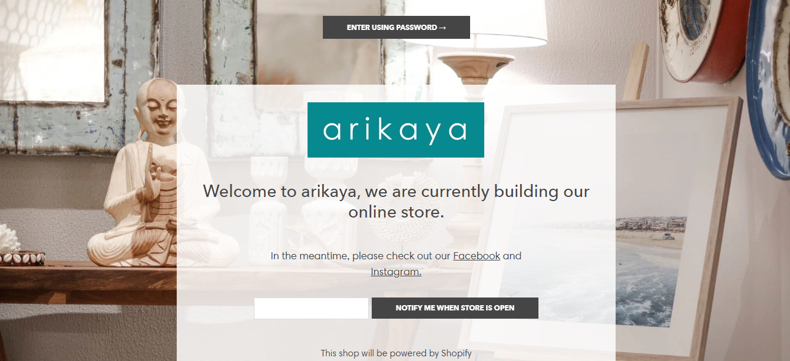

Arte Organica
Arte Orgánica" springs to life in this image—a digital oasis harmonizing technology and nature. Its homepage seamlessly blends user-friendly design with earthy tones, embodying the company's commitment to eco-friendly products. From organic wearables to solar gadgets, curated snapshots echo sustainable values. The logo, the Earth, proudly symbolizes their mission. Transparent sourcing visuals build trust, while social icons and testimonials foster community. This image captures the essence of "Arte Orgánica"—a gateway to a greener lifestyle.

Rie La Huerta
Rie La Huerta" website blossoms with lush greens, mirroring their organic ethos. The logo, combining water droplets and a leaf, symbolizes vitality. Scroll for a gallery of organic harvest, accented with insightful descriptions. "Meet the Cultivators" builds trust, while testimonials affirm quality. Footer icons offer quick contact and certification access. This image embodies "Rie La Huerta" as a digital haven for organic sustenance and sustainable living.

Brader Hops
Brader Hops" website emanates the spirit of brewing. The homepage is adorned in hop-inspired hues, mirroring their passion for beer. The logo, a meld of hops and a mug, encapsulates their craft. Scrolling unveils an enticing lineup of brews, each with succinct tasting notes. "Brewer's Insights" offer a glimpse behind the scenes, forging a bond. Customer feedback weaves a tapestry of satisfaction. Footer links offer seamless access to orders and events. This image paints "Brader Hops" as a digital taproom—a virtual realm where brewing expertise and beer connoisseurship converge.

Arikaya
Arikaya Treasures" website unveils a world of Southeast Asian allure. The homepage exudes warm earth tones, echoing their love for timeless furniture and accessories. The logo, an elegant fusion of cultural motifs, epitomizes their pursuit. Scrolling invites exploration of an eclectic array — each piece a narrative of history and artistry. "Journey with Us" delves into sourcing, evoking a sense of discovery. Testimonials weave tales of cherished finds. Footer links provide swift access to collections and inquiries. This image conjures "Arikaya Treasures" as a digital trove where Southeast Asian heritage and enduring beauty converge.

Pet Shop
PetPaws Haven" website welcomes pet lovers to a world of tail wags and purrs. The homepage radiates with playful colors, mirroring their devotion to furry companions. The logo, a delightful blend of a paw print and a heart, captures their spirit. Scroll to uncover a diverse array of pet products, each designed for comfort and joy. "Our Pet Community" fosters a sense of belonging, while customer stories celebrate four-legged friendships. Footer links provide seamless access to products and inquiries. This image paints "PetPaws Haven" as a digital pet haven — a place where pet care and affectionate bonds flourish.

Psyconauts
PsycoNautas" webpage launches cosmic exploration. The homepage glows with celestial hues, mirroring their fascination with the cosmos. The logo, a meld of a spaceship and a neuron, symbolizes their quest. Scroll to reveal a cosmic compendium, each article a portal to astral wonders. "Cosmic Journeys" takes visitors on virtual expeditions, fostering awe. User-contributed stargazing stories create a cosmic community. Footer links offer swift access to space-related resources and inquiries. This image evokes "PsycoNautas" as a digital observatory — a realm where cosmic mysteries and human curiosity collide.


{kind=link}
{kind=link}
{kind=link}